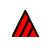

Supporting DELTA users
Kevin Thiele, Descriptive Data Team Leader, Atlas of Living Australia

The Atlas of Living Australia (ALA) is currently considering options for supporting users of the DELTA (Description Language for Taxonomy) descriptive information system.
The DELTA system is a flexible method for encoding taxonomic descriptions for computer processing. DELTA-format data can be used to produce natural-language descriptions, conventional or interactive keys, phylogenetic and phenetic classifications, and information-retrieval systems. By capturing their data in DELTA, taxonomists can better ensure uniformity and completeness in their descriptions, more efficiently update them as new knowledge comes to hand, and save time by re-using the same data for multiple purposes.
The DELTA system was developed by the then CSIRO Entomology between 1971 and 2000. DELTA has become one of the main global standards for codifying descriptive data. It is in use worldwide for diverse kinds of organisms, including viruses, corals, crustaceans, insects, fish, fungi, plants, and wood. The programs are free for non-commercial use.
However, since 2000 there has been no ongoing maintenance of the DELTA programs. This has resulted in it falling behind recent improvements in Windows operating systems. Some core components of the DELTA system can no longer be compiled to operate under Windows Vista or Windows7, and it is expected that, without significant work, the system will soon become unusable.
To that end, key members of the Australian DELTA community met with the Atlas in June to consider options for DELTA’s future and a proposal for the Atlas to fund an upgrade and update to the DELTA programs. As a result the Atlas has committed to exploring ways of meeting the needs of the members of the taxonomic community who develop, publish and maintain DELTA datasets.
Various options are being considered, ranging from a simple update of the DELTA code-base to make it compatible with current Windows environments, through a number of options for completing the DELTA Editor and rewriting critical DELTA components in a modern programming language, to fully supporting the DELTA community through other Atlas activities such as the IdentifyLife collaborative project.
The outcome will see the Atlas providing a mechanism for the worldwide community of DELTA users to continue using DELTA, or something very like it, for managing their descriptive data and making it available online. Watch this space for more information as this project develops.
This redevelopment of DELTA will allow DELTA keys, such as the following Australian examples, to become more accessible to more users (i.e. those people using newer Windows operating environments):